Hudl
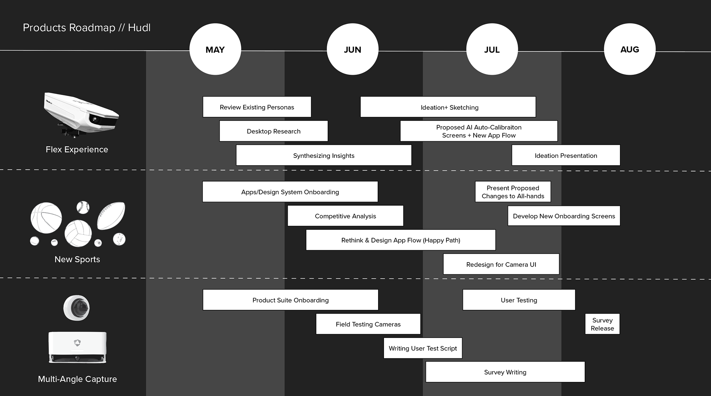
What is Hudl?
Hudl is a leading sports analytics company, providing a platform for storing and analyzing video footage from high school, club, and elite athletic teams—boasting the second largest video storage capacity after YouTube. In its mission to enhance game capture capabilities, Hudl has released several lines of cameras, including the Focus Flex, which leverages machine learning to track the ball in real-time, ensuring that coaches never miss a second of the action. During my internship, Hudl was launching a new camera line, the Focus Point, designed for static-mount installations.
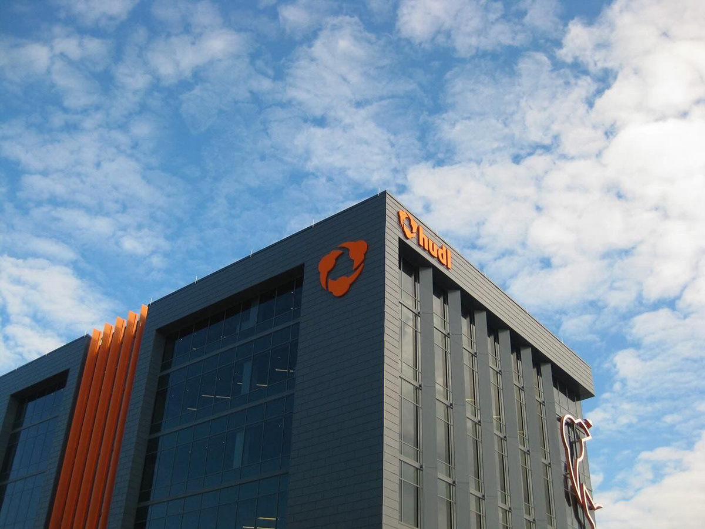
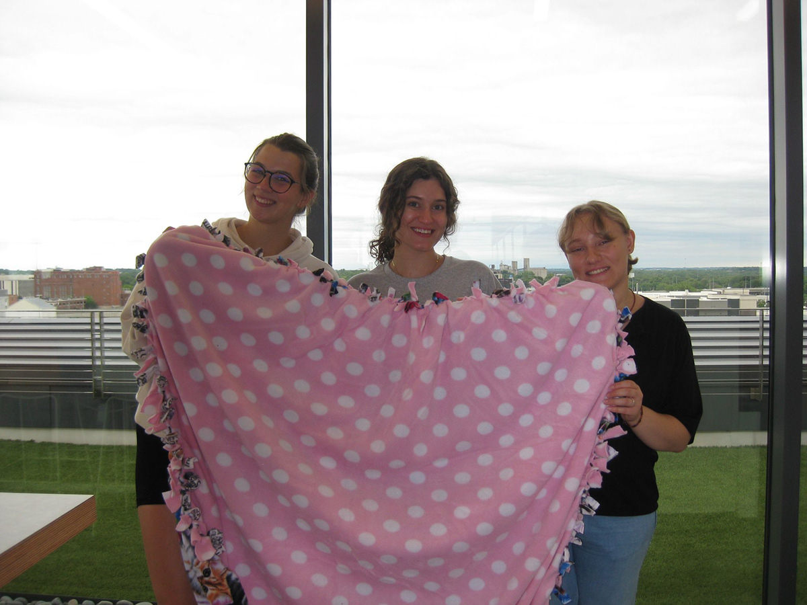
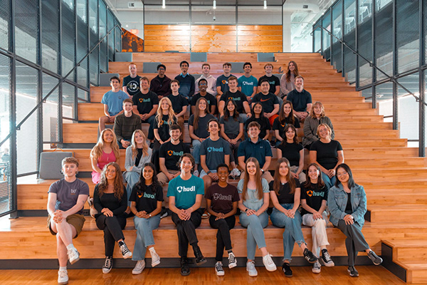
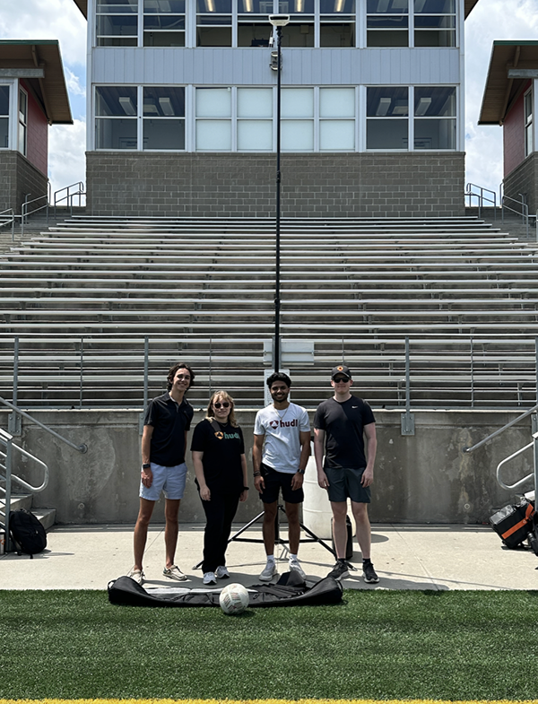
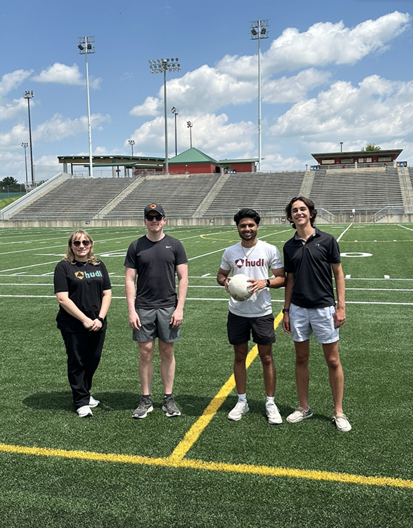
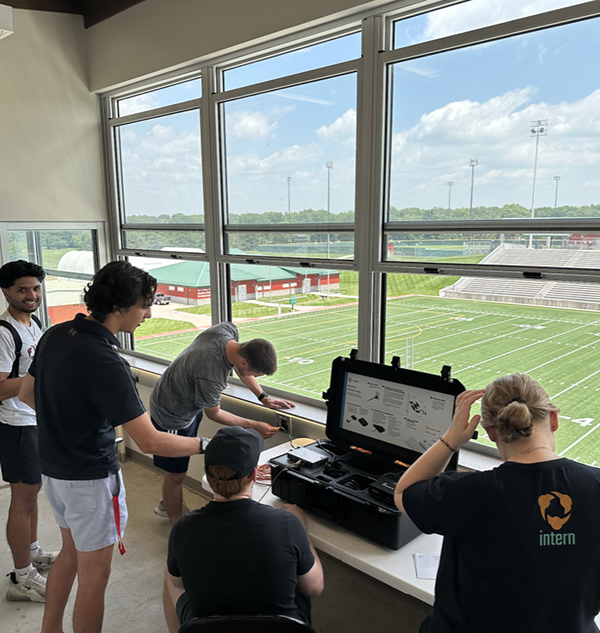
A quick overview of all the work I did at Hudl (full version available further below): Condensed Summary Presentation →
My role at Hudl
As a Product Designer at Hudl, I played a key role in bridging the gap between the product — various sports camera lines and apps — and its user base. My responsibilities included prototyping new designs in Figma and gathering and synthesizing customer feedback, which came from a diverse user base that extended beyond coaches to athletic directors, parents, media teams, and athletes themselves. I created detailed personas, conducted interviews, and wrote surveys to gather insights that informed the next-generation designs for Hudl’s apps.
Graphic overview of the cross-department collaborative work I balanced between:
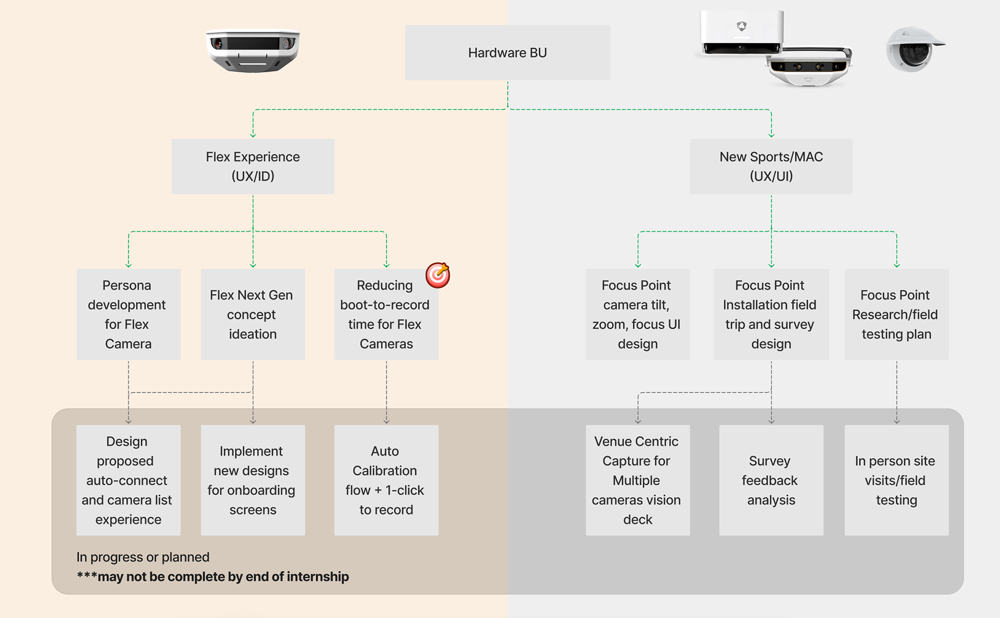
My role as a product designer often required me to wear many hats and balance responsibilities. My time often overlaid with the industrial designers (ID) and user experience designers (UX) on the Flex Experience team, while also having many duties as a UX and user interface designer (UI) for the New Sports and Multi-Angle Capture (MAC) team. One area of particular focus was when it came to scoping out the next 6 months to next 10 years' vision and direction for the Flex Cameras — which uses onboard ML technologies to track the ball across the field. This kicked off an ideation process of many practical and moon-shot ideas needing to be depicted.
Examples from the ideation process: Ideation Snippets →
Work in Dovetail to create, tag + sort, and group persona insights from customer interviews:
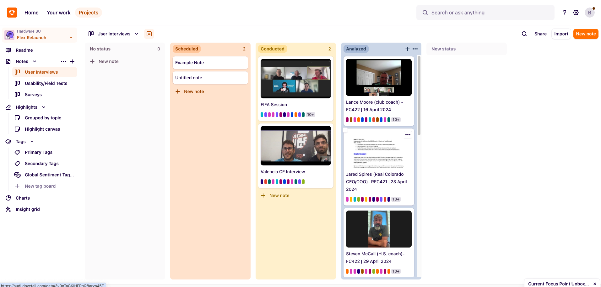
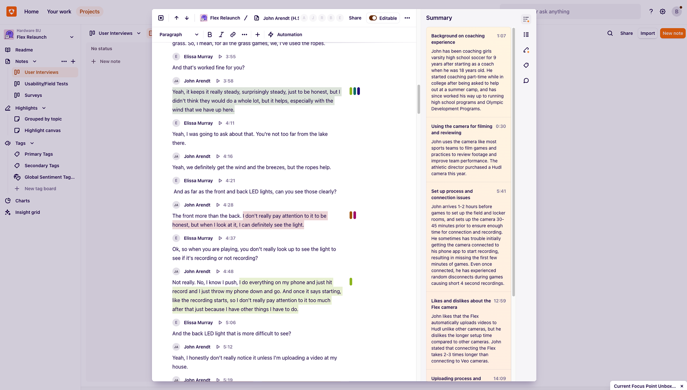
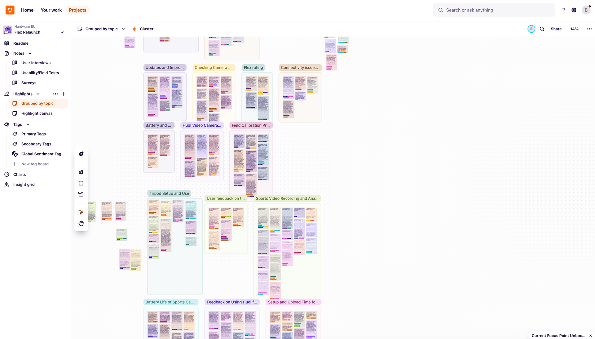
The UI of it all
Many of the screens I worked on were in the early stages of development, primarily designed by engineering teams and in need of design refinement. One significant project I took on involved designing a camera preview and adjustment screen. This screen needed to be intuitive, horizontally aligned, and capable of allowing users to adjust settings such as zoom, focus, and tilt directly within the app. Given that many cameras were installed in varied locations — on ceilings, in right or left field, on goalposts, or up high or low — ease of use was crucial.
Existing camera preview UI during setup (no adjustment available, no live preview — picture snapshot only):
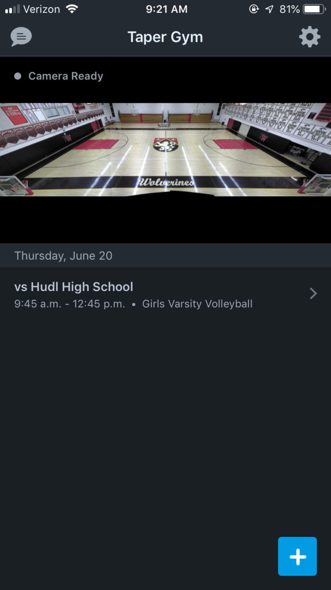
Design iterations for camera live preview + adjustment UI:
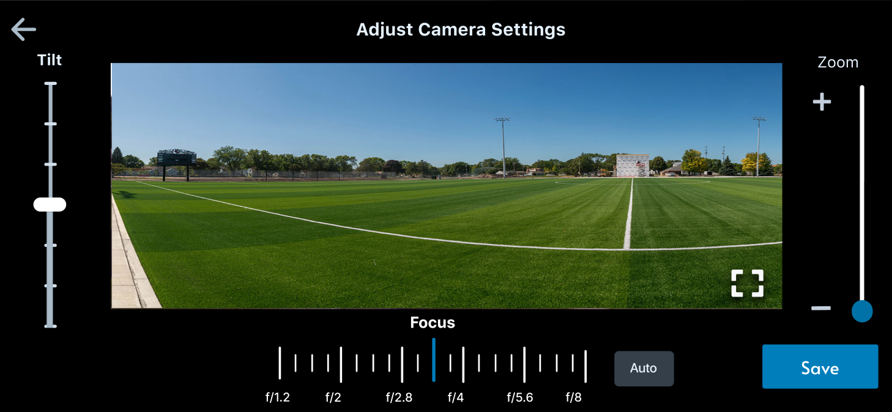
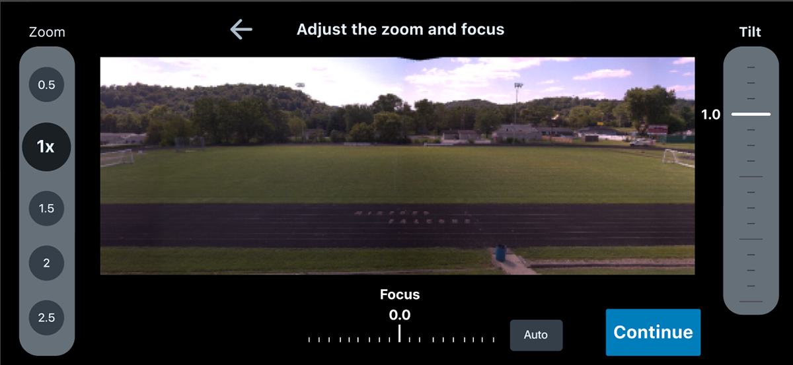
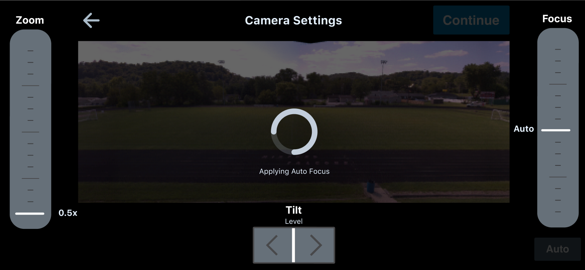
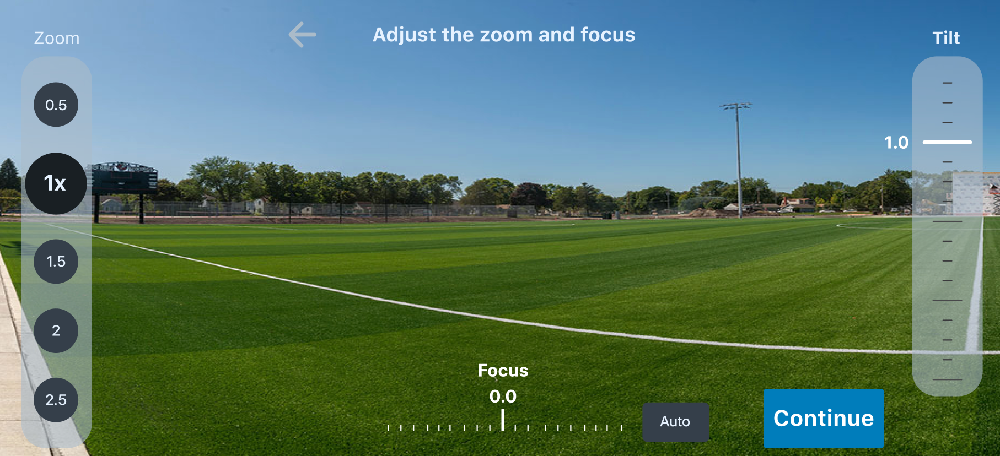
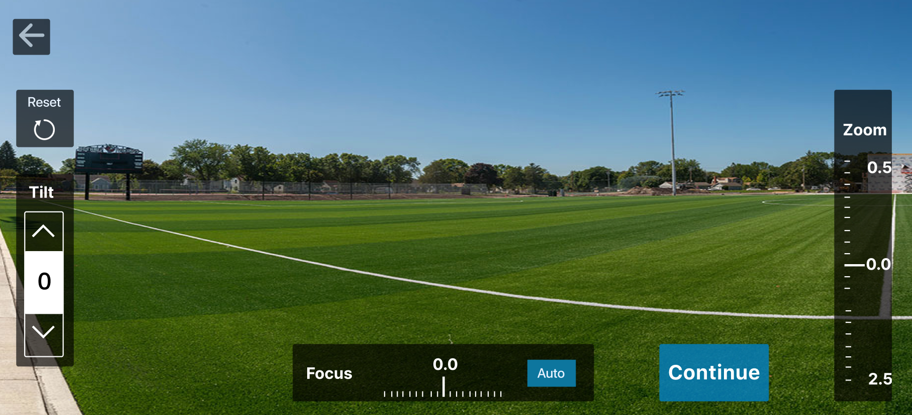
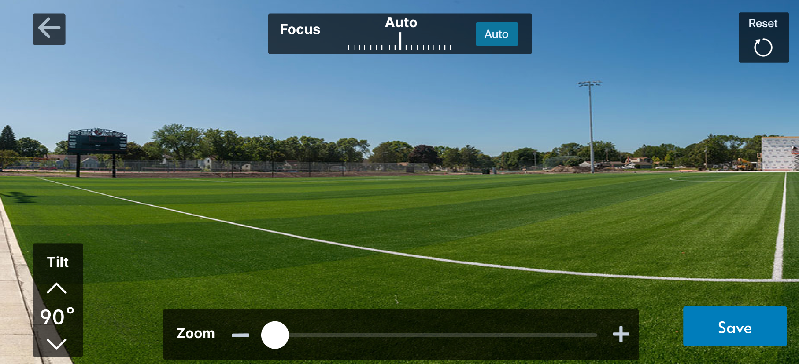
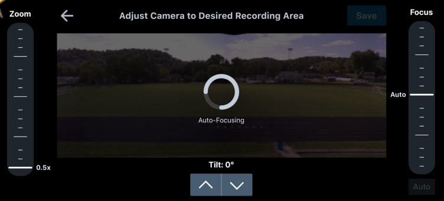
As I built a deep knowledge of the complexity of the app's various user flows, camera specs + limitations, and several integrable Hudl software product suites, I could use my inferences to suggest user-centric UI changes, through the creation of multiple happy paths and exception cases in Figma.
This can be seen more when discussing our competitor VEO in my Complete Summary Presentation below.
On the note of boot-to-record time, as you can imagine part of that user flow would include the onboarding screen sequence, which I took a lot of time looking at and imagining how to convey the same information and tasks while cutting down on the number of taps, screens, and overall time needed to finish it and then record screen. While in the "next" version of the app, you can see my redesigned screens meant to give the user more control, by having the different tasks of the onboarding process they'd be forced to go through now become an optionable item on a menu they can choose from.
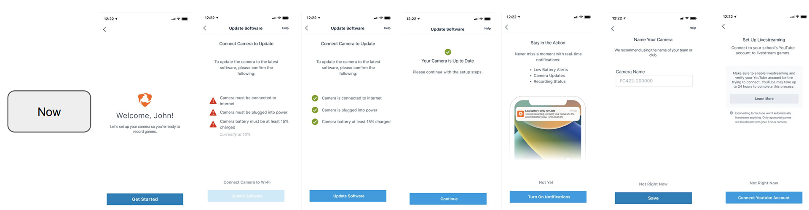
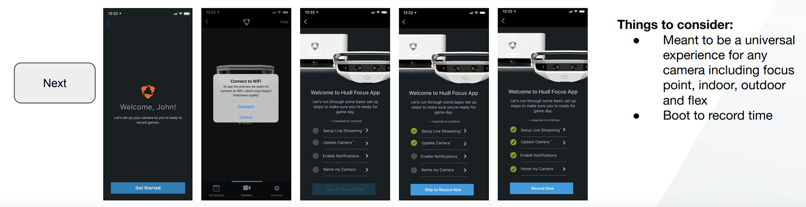
Business strategic design choices
A significant challenge was optimizing the boot-to-record time to maintain a competitive edge against our primary rival, Veo, whose dominance in global football was a major consideration in our designs. With upper management prioritizing quantitative data to present to the board, our goal was to reduce our time from 3 minutes to 50 seconds to surpass Veo. This required rethinking the entire app flow before progressing to higher-fidelity designs. I frequently revisited the user flow throughout the design process, adapting to engineering updates and management feedback, while pitching solutions that accounted for the happy path, sad path, and edge cases.